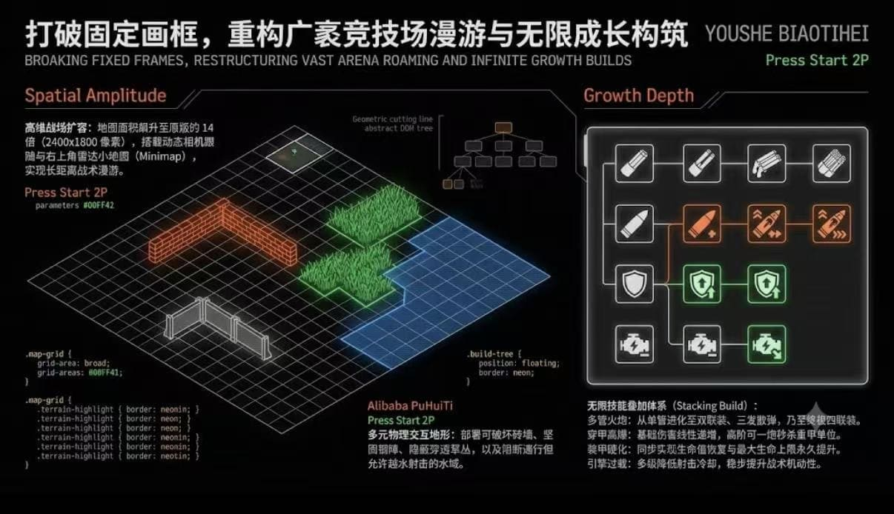
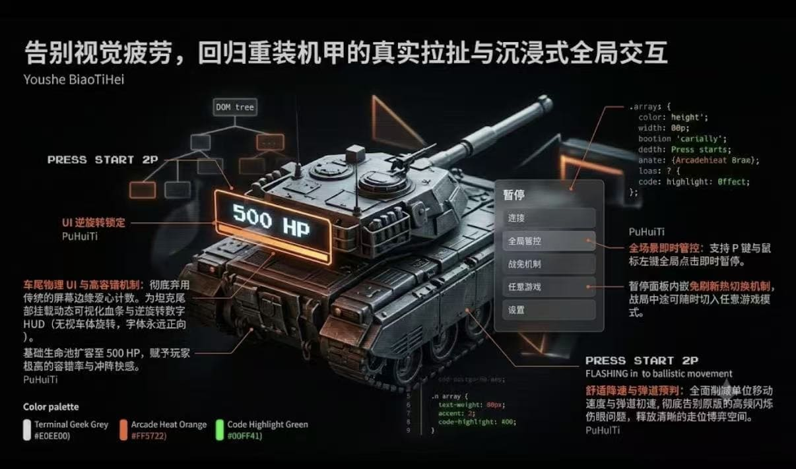
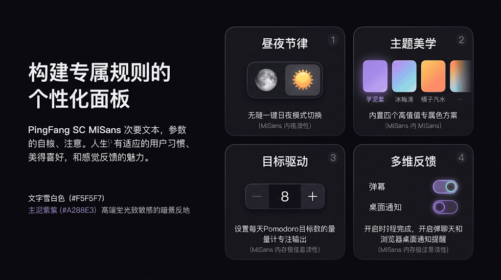
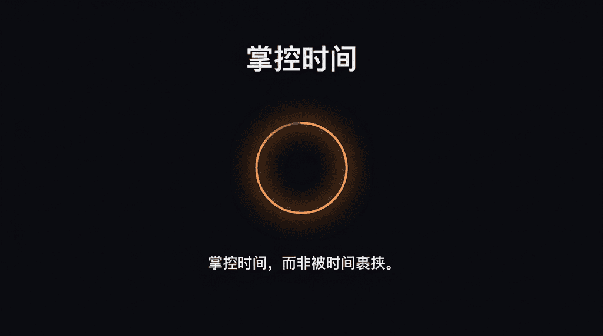

PRACTICE 01
经典2D网页游戏复刻：坦克大战
通过复刻经典游戏，进一步锻炼与 AI 大模型结短编程的能力。针对游戏中的网格系统与基础碰撞检测，通过向 AI 工具精准描述需求，逐步调试并修复代码 Bug，实现核心游戏机制；掌握了 Web 端基础的 DOM 操作与事件监听原理，积累了项目排错经验。
坦克大战 · 内嵌试玩
PROJECT DECK · 5 PAGES




点击任意一张放大，弹窗内左右箭头可翻看 5 页
PRACTICE 02
沉浸式时间管理工具：番茄钟Web应用
针对日常学习中的专注力管理需求，从零开始设计并部署一款极简版网页番茄钟。在缺乏深厚编程基础的情况下，运用大模型 AI 工具辅助生成前端代码（HTML/CSS/JS），理解并跑通了倒计时逻辑与页面交互；独立完成代码托管，并成功使用 GitHub Pages 实现项目的自动化部署与公网访问，建立了个人的首个完整开发链路认知。
番茄钟 · 内嵌试玩
PROJECT DECK · 5 PAGES




点击任意一张放大，弹窗内左右箭头翻页
PRACTICE 03
AI智能体与RAG应用构建实操
依托阿里云百炼平台与科大讯飞平台，完成基于特定文档的 RAG 应用实验，理解向量数据库与检索召回的基本原理；实践操作大模型微调流程，编写并优化结构化 Prompt，使智能体能够在限定场景下输出更符合要求的回答；使用 PAI ArtLab 及 VISION 设计平台完成初步的 AI 图像生成与视觉设计实验。